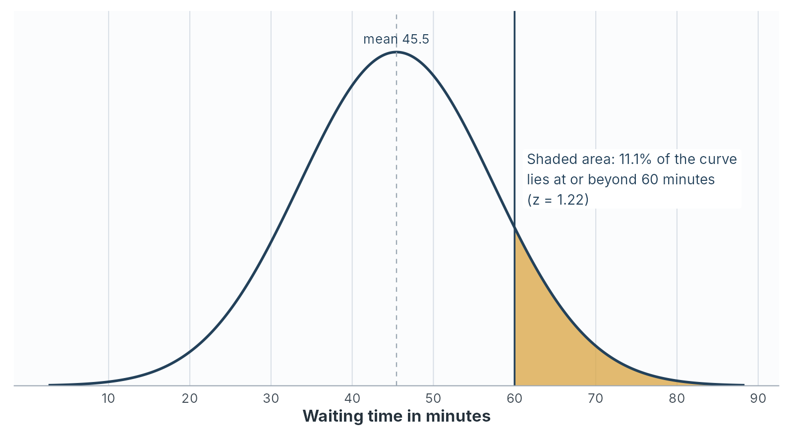

Part 3: Areas, percentiles and checking normality
standard normal distribution, z table, normal probability, percentile, Q-Q plot, Shapiro-Wilk test, normality check
Part 2 placed a single value inside a distribution with its z-score. Part 3 turns z-scores into shares of customers and back again, answers the manager’s question about a one-hour promise, and shows you how to check that the normal model fits before you rely on it.
The standard normal distribution
The standard normal distribution is the normal distribution with a mean of 0 and a standard deviation of 1. Its variable is written \(Z\):
\[Z \sim N(0, 1)\]
Standardising any normal variable turns it into \(Z\). A waiting time of 60 minutes and a z-score of 1.22 occupy the same position, one on the waiting-time curve and the other on the standard curve, so the share of the area beyond them is the same. That is how one table serves every normal distribution: you convert your value to a z-score, then read the area from the table for \(Z\).
Table 2.13 gives the area to the left of each z-score from 0.0 to 3.0. This area is the share of cases below that point. The third column gives the share above, equal to 1 minus the second.
| \(z\) | Area below \(z\) | Area above \(z\) |
|---|---|---|
| 0.0 | 0.5000 | 0.5000 |
| 0.1 | 0.5398 | 0.4602 |
| 0.2 | 0.5793 | 0.4207 |
| 0.3 | 0.6179 | 0.3821 |
| 0.4 | 0.6554 | 0.3446 |
| 0.5 | 0.6915 | 0.3085 |
| 0.6 | 0.7257 | 0.2743 |
| 0.7 | 0.7580 | 0.2420 |
| 0.8 | 0.7881 | 0.2119 |
| 0.9 | 0.8159 | 0.1841 |
| 1.0 | 0.8413 | 0.1587 |
| 1.1 | 0.8643 | 0.1357 |
| 1.2 | 0.8849 | 0.1151 |
| 1.3 | 0.9032 | 0.0968 |
| 1.4 | 0.9192 | 0.0808 |
| 1.5 | 0.9332 | 0.0668 |
| 1.6 | 0.9452 | 0.0548 |
| 1.7 | 0.9554 | 0.0446 |
| 1.8 | 0.9641 | 0.0359 |
| 1.9 | 0.9713 | 0.0287 |
| 2.0 | 0.9772 | 0.0228 |
| 2.1 | 0.9821 | 0.0179 |
| 2.2 | 0.9861 | 0.0139 |
| 2.3 | 0.9893 | 0.0107 |
| 2.4 | 0.9918 | 0.0082 |
| 2.5 | 0.9938 | 0.0062 |
| 2.6 | 0.9953 | 0.0047 |
| 2.7 | 0.9965 | 0.0035 |
| 2.8 | 0.9974 | 0.0026 |
| 2.9 | 0.9981 | 0.0019 |
| 3.0 | 0.9987 | 0.0013 |
The table lists positive z-scores only. Symmetry supplies the negative ones: the area below \(-z\) equals the area above \(+z\). For example: the area below \(z = -1.3\) equals the area above \(z = 1.3\), which is 0.0968.
The table uses one decimal place of \(z\). Software uses as many as you like, and the difference is usually a few tenths of a percentage point. Printed tables with two decimal places exist, and they fill a page. For a management decision, one decimal place is almost always enough.
From a value to a share
Four steps turn a question about a value into a share of cases.
- Standardise: Convert the value to a z-score.
- Sketch: Draw a rough bell curve, mark the z-score, and shade the area the question asks for. The sketch tells you whether you need the area below, above or between.
- Look up: Read the area from Table 2.13, using symmetry for a negative z-score.
- Convert: Multiply the share by the number of cases, and state the answer in the question’s own terms.
Worked example 2.8
How many customers wait an hour or more?
Waiting times in the teaching dataset are close to normal, with a mean of 45.455 minutes and a standard deviation of 11.905.
Use the normal model to estimate the share of customers who wait 60 minutes or longer, and the number of the 200 that implies. Then compare the estimate with the data.
Step 1, standardise:
\[z = \frac{60 - 45.455}{11.905} = \frac{14.545}{11.905} = 1.22\]
Step 2, sketch: The question asks for the area to the right of \(z = 1.22\), the upper tail shaded in Figure 2.4.
Step 3, look up: Rounded to one decimal, \(z = 1.2\). The area above is 0.1151.
Step 4, convert: \(0.1151 \times 200 = 23\) customers, or about 11.5 per cent.
Software, working with the unrounded z-score of 1.222, gives an area of 0.1109, or 22 customers. Rounding \(z\) to one decimal cost less than half a percentage point.
Against the data: The file records 21 customers who waited 60 minutes or longer, 10.5 per cent. The normal model predicted 22 or 23. For a variable this close to normal, the model and the data agree to within one or two customers.

Worked example 2.9
A call centre’s call lengths are close to normal, with a mean of 6 minutes and a standard deviation of 1.5 minutes.
- What share of calls last longer than 9 minutes?
- What share last less than 4.5 minutes?
- What share last between 4.5 and 9 minutes?
- The centre handles 2,000 calls a day. How many calls a day last longer than 9 minutes?
- \(z = (9 - 6) \div 1.5 = 2.0\). Area above 2.0 is 0.0228, about 2.3 per cent.
- \(z = (4.5 - 6) \div 1.5 = -1.0\). Area below \(-1.0\) equals area above \(1.0\): 0.1587, about 15.9 per cent.
- $1 - 0.0228 - 0.1587 = $ 0.8185, about 81.9 per cent.
- \(0.0228 \times 2{,}000 = 45.6\), so about 46 calls a day. A supervisor planning for long calls needs capacity for roughly that many.
From a share to a value: percentiles
Chapter 1 defined a percentile as the value below which a given share of the data falls. The normal model finds percentiles by running the four steps backwards: start from the share, find the z-score that cuts it off, then convert the z-score to a value with \(x = \bar{x} + z s\).
To find the z-score, read Table 2.13 from the middle column outwards. For the 90th percentile, look for the area below closest to 0.9000. The nearest entry is 0.9032, at \(z = 1.3\). Software gives the exact figure, 1.2816.
Learn the four z-scores in Table 2.14 by heart, because they recur throughout the module. Chapter 4 uses the last three every time it builds a confidence interval.
| Share below \(z\) | Share in the middle, between \(-z\) and \(+z\) | \(z\) |
|---|---|---|
| 90% | 80% | 1.282 |
| 95% | 90% | 1.645 |
| 97.5% | 95% | 1.960 |
| 99.5% | 99% | 2.576 |
Worked example 2.10
Can the branch promise an hour to nine customers in ten?
This is the chapter’s decision question. The manager wants to promise that nine customers in ten will be seen within an hour.
Find the wait that nine customers in ten stay within, under the normal model and in the data. Then advise the manager.
Under the normal model: Nine in ten is the 90th percentile, so \(z = 1.2816\).
\[x = 45.455 + 1.2816 \times 11.905 = 45.455 + 15.257 = 60.7 \text{ minutes}\]
Nine customers in ten wait 60.7 minutes or less.
In the data: Sorting the 200 waits, the 90th percentile is 60 minutes, and 181 customers, 90.5 per cent, waited 60 minutes or less.
The advice:
On this month’s figures, a promise of “seen within an hour” holds for about nine customers in ten and no more. The data put 90.5 per cent within the hour, and the normal model puts 88.9 per cent. The margin is one or two customers in 200, so a slightly slower month would break the promise. These are one month’s customers at one branch. A promise of 65 minutes would hold for about 95 per cent, and a promise of 60 minutes needs either a faster service or a softer wording.
The 95 per cent figure comes from the 95th percentile: \(45.455 + 1.645 \times 11.905 = 65.0\) minutes under the model, and 65 minutes in the data.
A training test has scores close to normal, with a mean of 62 and a standard deviation of 8.
- The top 10 per cent of scorers receive a distinction. What score marks the cut-off?
- The bottom 5 per cent are offered extra support. What score marks that cut-off?
- Between which two scores do the middle 95 per cent of candidates fall?
- The top 10 per cent fall above the 90th percentile, \(z = 1.282\): $62 + 1.282 = 62 + 10.3 = $ 72.3.
- The bottom 5 per cent fall below the 5th percentile, \(z = -1.645\): $62 - 1.645 = 62 - 13.2 = $ 48.8.
- The middle 95 per cent lie within \(z = \pm 1.960\): \(62 \pm 1.960 \times 8 = 62 \pm 15.7\), from 46.3 to 77.7.
Checking normality
Every result in From a value to a share and From a share to a value: percentiles rests on one assumption: that the variable is close to normal. Waiting time is, and the model’s answers matched the data within a customer or two. Before you use the model on any other variable, check it. Five checks are available, and you should read them together.
1. The histogram with a normal curve: JASP can draw a smooth density line over the histogram, and PocketStat overlays a fitted normal curve. Look for one peak, rough symmetry, and tails that thin out at the same rate on both sides.
2. The mean against the median: Chapter 1’s quick test. A large gap in either direction signals skew.
3. Skewness and kurtosis against their standard errors: Part 1’s ratios. A ratio beyond 2 flags a departure larger than sampling variation.
4. The Q-Q plot: A Q-Q plot, short for quantile-quantile plot, sorts the data and plots each value against the value a normal distribution would predict for that position. If the data are normal, the points lie along a straight diagonal line. The patterns of departure are distinctive:
| Pattern in the Q-Q plot | What it means |
|---|---|
| Points on the line throughout | Close to normal |
| A curve, bowing away from the line | Skew |
| An S-shape, points crossing the line at the ends | Tails lighter or heavier than normal |
| A flat row of points at one end | A ceiling or a floor in the scale |
| A staircase of short flat steps | Values recorded in whole units, such as whole years |
| One or two points far off the line at an end | Individual unusual values |
![Two JASP Q-Q plots side by side, each with theoretical quantiles on the horizontal axis and standardised observed values on the vertical axis, and a diagonal reference line. For Waiting_Time_Mins the points follow the line closely along its length, with the highest point, the 90-minute wait, lying well above the line at the top right. For Spending the points at the lower left sit above the line, and just above a theoretical quantile of 1 they jump upward, where the VIP group begins, so the pattern breaks away from the diagonal.](../assets/images/screenshots/ch02/ch02-jasp-f3-qq-plots.png)
5. The Shapiro-Wilk test: The Shapiro-Wilk test measures how closely the sorted data follow the pattern a normal distribution would produce. It reports a statistic, \(W\), which is 1 for a perfect match and falls as the fit worsens, and a p-value. Chapter 4 explains p-values in full. For this chapter, read the p-value as follows: a p-value below 0.05 means the data depart from normality by more than chance alone would usually produce, and a p-value of 0.05 or above means the data are consistent with a normal population.
The test has one weakness, and it comes from sample size. With a large sample it detects departures too small to matter. With a small sample it misses departures large enough to matter. The test comes last in the list, and the pictures come first.
Four variables, five checks
| Check | Waiting_Time_Mins |
Age |
Satisfaction |
Spending |
|---|---|---|---|---|
| Histogram | One peak, symmetric | Broad and flat | Cut off at 5.00 | Two peaks, a VIP group on the right |
| Mean against median | 45.46 against 46.00 | 35.35 against 35.00 | 3.81 against 3.86 | 505.65 against 494.28 |
| Skewness ratio | 0.65 | 0.22 | -1.68 | 3.69 |
| Kurtosis ratio | 1.41 | -1.75 | -1.16 | 0.57 |
| Q-Q plot | On the line | Staircase, flattened at both ends | Flat row at the top | Breaks away, with a jump at the VIP group |
| Shapiro-Wilk \(W\) | .993 | .981 | .976 | .948 |
| Shapiro-Wilk \(p\) | .480 | .008 | .002 | < .001 |
| Verdict | Close to normal | Symmetric, flatter than normal | Ceiling effect | Two groups, right-skewed overall |
Worked example 2.11
A symmetric variable that fails the test
Age has a skewness close to zero, a mean and median a third of a year apart, and a histogram with no long tail. The Shapiro-Wilk test gives \(p = .008\).
Decide whether age is close enough to normal to use the empirical rule for a planning estimate, and explain the test result.
What the test detected: The p-value is below 0.05, so the test reports a departure from normality. The departure lies in the tails. The kurtosis ratio of \(-1.75\) says age is flatter than normal, and the Q-Q plot shows the youngest and oldest customers closer to the centre than a normal curve would place them. Ages start at 22 and stop at 52, and the file contains no customer in their teens or their 60s.
Whether it matters for the planning estimate: Compare the empirical rule with the data:
| Band | Rule predicts | Data holds |
|---|---|---|
| Within 1 SD, 28.0 to 42.7 years | 68% | 69.0% |
| Within 2 SD, 20.6 to 50.0 years | 95% | 98.0% |
| Within 3 SD, 13.3 to 57.4 years | 99.7% | 100% |
The rule is close in the centre and slightly cautious in the tails. For a rough planning estimate of how many customers fall in an age band, the normal model is good enough.
The lesson: With 200 cases, the Shapiro-Wilk test detects a real departure that makes little practical difference to this estimate. The test answers “is this exactly normal?” The manager’s question is “is the normal model good enough for this purpose?” Answer the second question with all five checks.
JASP reports the following for the time, in days, taken to settle 150 supplier invoices:
- Mean 31.2, median 26.0
- Skewness 1.12, standard error 0.198
- Excess kurtosis 1.46, standard error 0.394
- Shapiro-Wilk \(W = .902\), \(p < .001\)
- The Q-Q plot bends upwards away from the line at the right-hand end
- Work through the five checks and give a verdict.
- The finance manager wants to use “mean plus two standard deviations” as the point at which an invoice counts as seriously late. Advise against or in favour, and say what to use in its place.
- The mean is 5.2 days above the median, which signals right skew. The skewness of 1.12 is in the strong band, with a ratio of \(1.12 \div 0.198 = 5.66\). The kurtosis ratio is \(1.46 \div 0.394 = 3.71\), so the tails are heavier than normal. The Q-Q plot bends upwards at the right, the pattern of a long right tail. The Shapiro-Wilk p-value is below 0.05. All five checks agree: strongly right-skewed with heavy tails.
- Advise against: The rule “mean plus two standard deviations” borrows the empirical rule, which assumes a normal shape. With a long right tail, far more than 2.5 per cent of invoices will pass that point, and the late-invoice alarm will ring more often than the manager expects. Use a percentile taken directly from the data, such as the 95th percentile of settlement times, which applies whatever the shape.
When the normal model fails
The normal model works well for waiting time. Applied to a variable that is far from normal, it produces answers that are distorted, and sometimes impossible.
Spending: Under a normal model with a mean of 505.65 USD and a standard deviation of 256.84, the share of customers spending less than zero is the area below
\[z = \frac{0 - 505.65}{256.84} = -1.97\]
which is about 0.025, or 5 customers in 200. No customer can spend a negative amount. The model also misplaces the high spenders. It puts the 90th percentile at 834.80 USD, and the data put it at 947.38. A pricing team using the model would underestimate what its top tenth of customers spend by more than 110 USD each.
Satisfaction: Under a normal model with a mean of 3.81 and a standard deviation of 0.74, the share of customers scoring above 5 is the area above \(z = 1.60\), which is 0.055, or about 11 customers. The scale stops at 5, so those 11 customers cannot exist. The ceiling records 12 real customers at exactly 5.00, and the model spreads them across scores the survey never offered.
Single rating items: Return_Intention takes only the five values 1 to 5. A normal curve spreads its area continuously, so it assigns shares to 3.4 and 4.7, values no customer can give. Chapter 1’s advice stands: report the median and the distribution.
When the model fails, describe the data directly:
- report percentiles taken from the data, which apply whatever the shape
- report the median and the interquartile range for the centre and spread
- use Chebyshev’s rule when you need a guaranteed share within \(k\) standard deviations
Worked example 2.12
Replacing the normal model for spending
The marketing team wants to target “low spenders”, defined as the bottom 10 per cent of customers. A colleague has calculated the cut-off from the normal model as 176.50 USD.
Decide whether that cut-off is defensible, and give the figure you would use.
The colleague’s figure: \(505.65 - 1.2816 \times 256.84 = 176.50\) USD. The arithmetic is correct.
Whether it is defensible: Spending is right-skewed, with a skewness ratio of 3.69, a Shapiro-Wilk p-value below 0.001 and a curved Q-Q plot. The normal model assumes a symmetric shape, so its percentiles are unreliable for this variable. The same model predicts 5 customers with negative spending.
The figure to use: Take the 10th percentile directly from the data: 200.08 USD. The data record 20 customers below 200 USD, exactly 10 per cent of 200.
The normal cut-off would have treated the customers between 176.50 and 200.08 USD as ordinary spenders, and the campaign would have missed some of the customers it was designed for. The data percentile needs no assumption about shape.
Reporting unusual values responsibly
A z-score beyond 2 or 3 identifies a value for a second look. The decision about that value is a separate step, and it belongs to you.
Chapter 1 set the rule for outliers: investigate them, report what you found, and record any change you make. The same rule applies to a value flagged by its z-score. Correct a value you can show is a recording error, and record the correction. Keep a value that is real, even when it is awkward, and report it. A customer who waited 90 minutes is one of the most urgent rows in the file, whether or not the time was recorded correctly.
Chapter 1’s test applies here too: would you make the same choice if the number pointed the other way? Removing a long wait makes the service look better. Removing an unusually low satisfaction score makes the customers look happier. A choice that only ever runs in your favour is selective.
Section summary
The standard normal distribution has a mean of 0 and a standard deviation of 1, and one table of its areas serves every normal variable once values are standardised. Four steps turn a value into a share: standardise, sketch, look up, convert. Running them backwards turns a share into a percentile. For waiting time, the model and the data agree within a customer or two, and they answer the manager: an hour covers about nine customers in ten, with a thin margin. Five checks judge whether a variable is close enough to normal, and the Shapiro-Wilk test comes last because its verdict depends on sample size. For skewed, capped or rating-scale variables, report percentiles, the median and the interquartile range taken directly from the data.